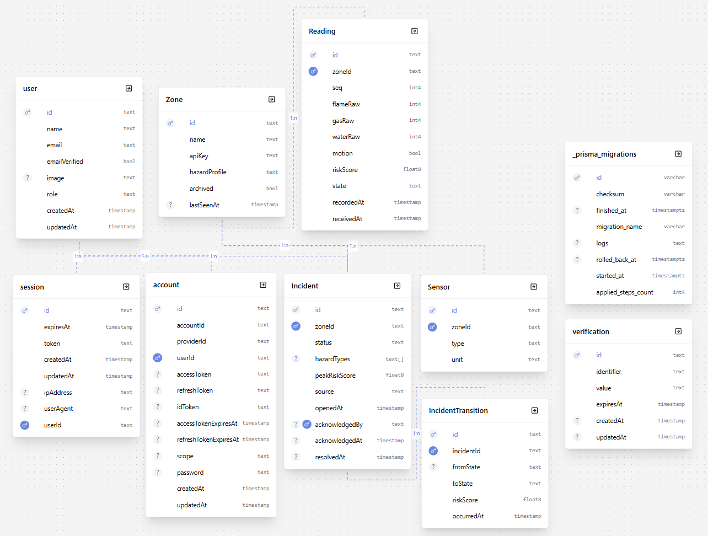
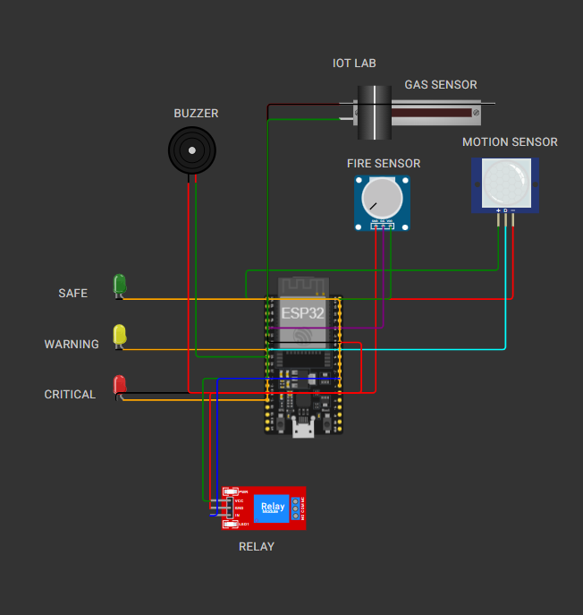
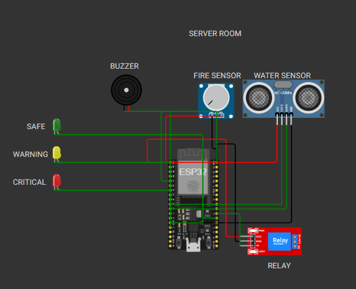
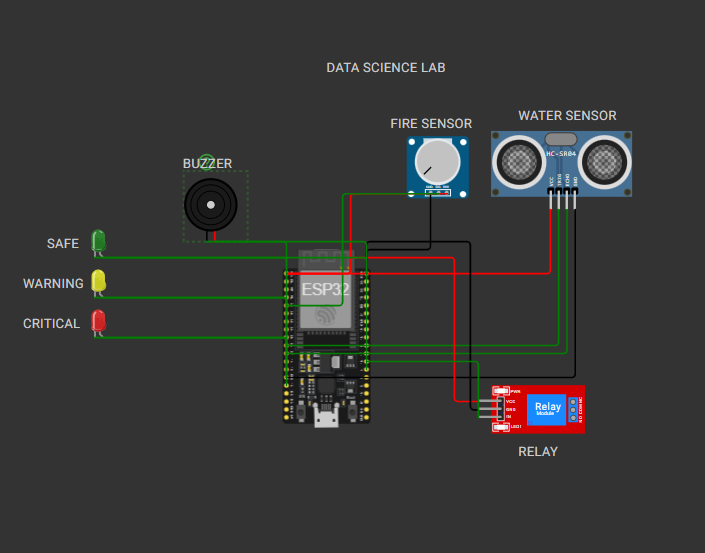

| Name | University | GitHub / Portfolio |
|---|---|---|
| Sadman Islam | Metropolitan University | GitHub: amisadman |
| Shah Samin Yasar | Metropolitan University | Portfolio: shahsaminyasar |
| Ahmed Thousif Thisham | Metropolitan University | Portfolio: ahmedthousif |
The SCS-RG system is engineered as a decoupled, multi-tiered campus safety grid comprising hardware sensor nodes, an Express/PostgreSQL backend processing engine, and a Next.js 16 command center web interface.
X-Zone-Key microcontroller authentication and session-based Role-Based Access Control (RBAC).zone:state, priority:update, incident:opened) to active operator dashboards.
Monitors soldering stations, chemical storage, and prototype hardware development. Wired with ESP32, IR Flame Sensor (Pin 34), MQ2 Gas Sensor (Pin 35), Water Level Sensor (Pin 32), PIR Motion Sensor (Pin 33), Status LED (Pin 2), Buzzer (Pin 25), and Emergency Relay Cutoff (Pin 26).

Monitors high-density server racks, power distribution units, and electrical switches. Optimized for electrical fire detection and cooling fluid leak monitoring.

Monitors high-performance computing clusters and student workstation clusters.

The core safety engine evaluates overall zone risk using a Bounded Multi-Hazard Risk Fusion Engine. It computes a single scalar Risk Score R ∈ [0.0, 100.0].
| Hazard Component | Weight (w_i) | Engineering & Safety Justification |
|---|---|---|
| Fire (w_fire) | 40.0 | Critical Life Safety Threat: Thermal combustion spreads rapidly and presents immediate catastrophic risk to life and physical assets. Demands top weighting. |
| Gas (w_gas) | 40.0 | Explosion Risk: Combustible gas accumulation (MQ2) creates severe explosion hazards in confined lab spaces. Equal priority to fire. |
| Water (w_water) | 30.0 | Electrical Short & Equipment Submersion: Fluid leaks cause electrical shorts and equipment failure. |
| Occupancy (w_occ) | 25.0 | Human Life Multiplier: Presence of occupants elevates emergency dispatch priority to ensure rapid evacuation. |
The persistence layer uses PostgreSQL managed via Prisma ORM. Below is the complete Entity-Relationship (ER) Diagram:
Header: X-Zone-Key: key_server_room_456
POST /api/readings HTTP/1.1
Host: robofusion-techathon-teamclover.onrender.com
Content-Type: application/json
X-Zone-Key: key_server_room_456
{
"zone_id": "server_room",
"seq": 142,
"timestamp_ms": 1721985430000,
"sensors": {
"flame_raw": 3200,
"gas_raw": 1800,
"water_raw": 150,
"motion": true
},
"sensor_health": { "flame": "ok", "gas": "ok", "water": "ok", "motion": "ok" }
}
Response (200 OK):
{
"success": true,
"message": "Reading ingested successfully",
"data": {
"accepted": true,
"state": "CRITICAL",
"risk_score": 73.2,
"commands": { "led": "red", "buzzer": true, "relay_cutoff": true },
"server_seq_ack": 142
}
}
Response (200 OK):
{
"success": true,
"message": "Zones retrieved successfully",
"data": [
{
"zone_id": "server_room",
"name": "Server Room 101",
"hazard_profile": "High density electrical & server racks",
"state": "CRITICAL",
"risk_score": 73.2,
"occupied": true,
"last_seen_at": "2026-07-26T14:30:00.000Z"
}
]
}
Response (200 OK):
{
"success": true,
"message": "Priority queue retrieved successfully",
"data": {
"ranked": [
{
"zone_id": "server_room",
"rank": 1,
"risk_score": 73.2,
"occupied": true,
"seconds_critical": 45,
"reason": "risk 73.2, occupied, critical 45s",
"source": "sensor",
"incident_id": "clx82910a0001"
}
]
}
}
{
"text": "Heavy smoke and electrical fire smell coming from the server room rack 4"
}
Response (200 OK):
{
"success": true,
"message": "Natural language report processed successfully",
"data": {
"parsed": true,
"extracted_signal": { "zone_id": "server_room", "hazard_type": "fire", "estimated_severity": "CRITICAL" },
"validation_gate": "passed",
"incident_id": "clx99201b0002"
}
}